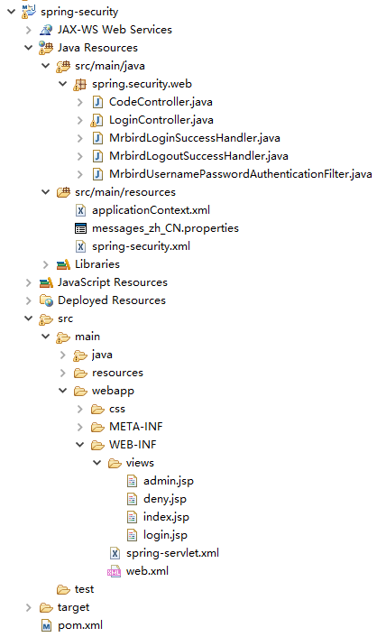
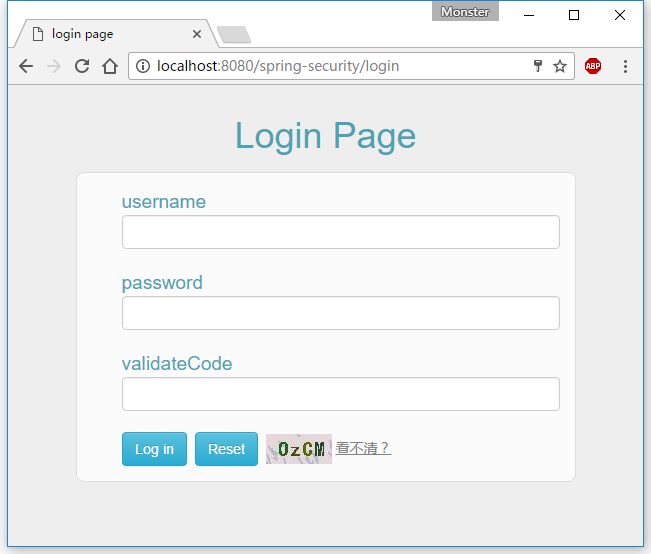
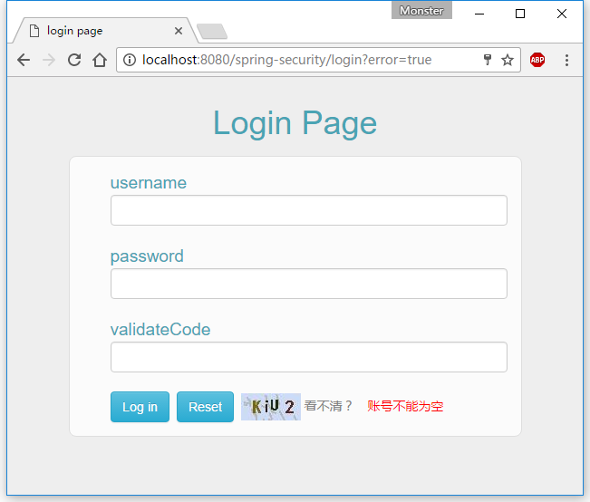
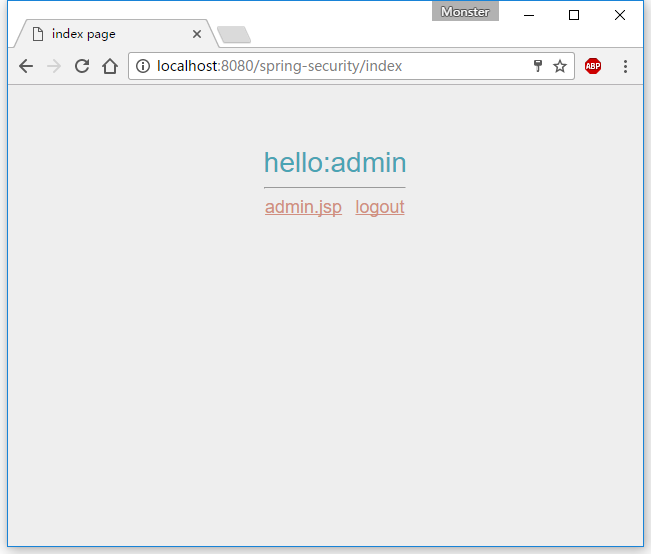
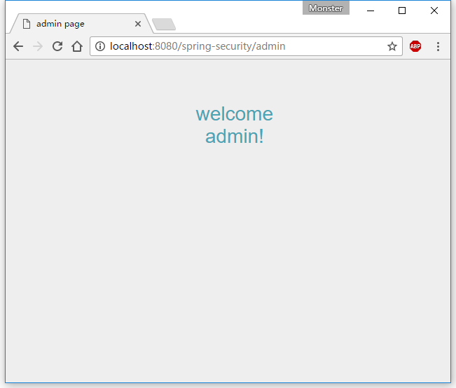
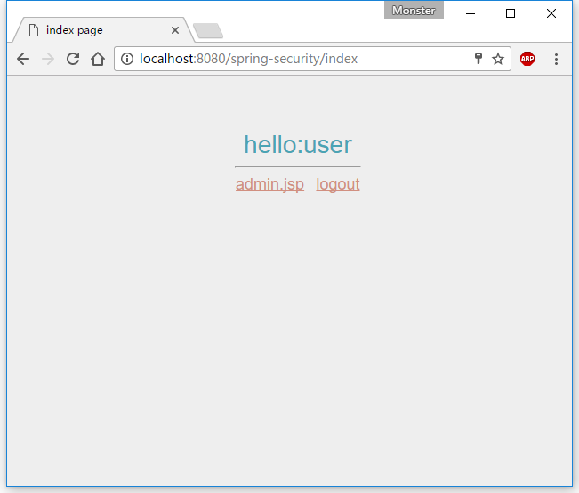
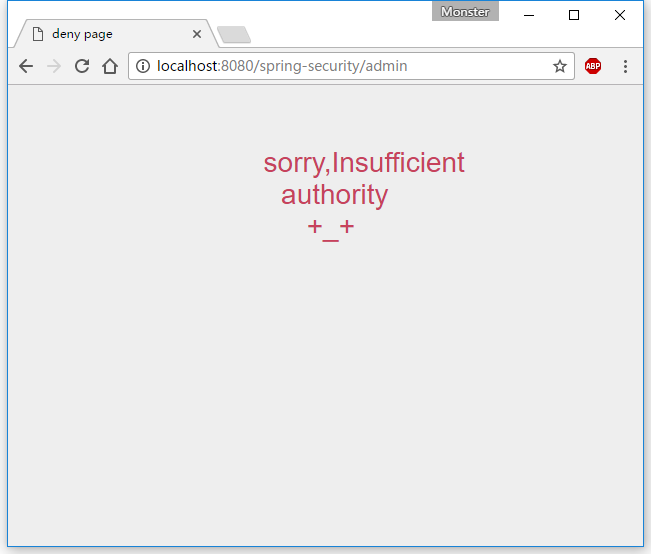

虽然Spring Security框架给我们赠送了个登录页面，但这个页面过于简单，Spring Security允许我们自定义登录页。
准备工作
第一步在maven中加入Spring Security相关依赖（Spring MVC已搭建好）。
|
|
为了在项目中使用 Spring Security 控制权限，首先要在web.xml 中配置过滤器，这样我们就可以控制对这个项目的每个请求了。
|
|
applicationContext.xml的配置如下：
|
|
在applicationContext.xml中，使用<import/>标签引入了spring-security.xml配置。spring-security.xml先简单配置如下：
|
|
上述配置中主要干了几件事：
1.声明在xml 中使用Spring Security 提供的命名空间xmlns=”http://www.springframework.org/schema/security"。
2.设置一些免验证资源或者路径。
3.利用intercept-url来判断用户需要具有何种权限才能访问对应的url资源，可以在pattern中指定一个特定的url资源，access指明需要的权限。比如url “/admin” 必须拥有ROLE_ADMIN的用户才能访问。在实际使用中，Spring Security采用的是一种就近原则，就是说当用户访 问的url 资源满足多个intercepter-url 时，系统将使用第一个符合条件的 intercept-url 进行权限控制。
4.access="IS_AUTHENTICATED_ANONYMOUSLY"指定匿名用户也可以访问。
5.<form-login/>标签的login-page=”/login”属性表示登录页面的请求，由控制器去处理。
6.<custom-filter/>标签引用了一个名为loginfilter的过滤器，用于登录的时候进行验证。
7.接下来定义了id为loginfilter的bean，其filterProcessesUrl设定了登录页表单提交时的请求；authenticationManager属性指向authenticationManager。该bean对应的类下文再做介绍。
8.user-service中定义了两个用户，admin 和user，password属性定义其密码，authorities属性为其分配权限。
9.<authentication-manager/>标签注册了一个认证管理器，并通过 <authentication-provider/>标签的user-service-ref属性将之前定义的用户装配起来。
除此之外，还可以使用SpEL表达式进行url的拦截。
启用SpEL
启用SpEL：
|
|
Spring Security支持的所有SpEL表达式如下：
| 安全表达式 | 计算结果 |
| authentication | 用户的认证对象 |
| denyAll | 结果始终为false |
| hasAnyRole(list of roles) | 如果用户被授予了列表中任意的指定角色，结果为true |
| hasRole(role) | 如果用户被授予了指定的角色，结果为true |
| hasIpAddress(IP Address) | 如果请求来自指定IP的话，结果为true |
| isAnonymous() | 如果当前用户为匿名用户，结果为true |
| isAuthenticated() | 如果当前用户进行了认证的话，结果为true |
| isFullyAuthenticated() | 如果当前用户进行了完整认证的话（不是通过Remember-me功能进行的认 证），结果为true |
| isRememberMe() | 如果当前用户是通过Remember-me自动认证的，结果为true |
| permitAll | 结果始终为true |
| principal | 用户的principal对象 |
|
|
接下来自己编写个登录页。
自定义登录页
login.jsp如下：
|
|
与Spring Security相关的就几个：
1./j_spring_security_check，提交登录信息的URL地址。
2.j_username，输入登录名的参数名称。
3.j_password，输入密码的参数名称。
4.${sessionScope['SPRING_SECURITY_LAST_EXCEPTION'].message}和${SPRING_SECURITY_403_EXCEPTION.message}用于输出登录失败的异常信息。
login.jsp页面尾部添加了验证码验证。验证码对应的controller如下：
|
|
接下来编写index.jsp，成功登录后跳转到该页面：
|
|
编写admin.jsp用于测试权限控制：
|
|
页面跳转controller：
|
|
处理登录
在spring-security.xml文件中定义的loginfilter过滤器对应的类如下：
|
|
MrbirdUsernamePasswordAuthenticationFilter继承自UsernamePasswordAuthenticationFilter，主要工作是获取用户在登录界面输入的用户名和密码，并判断是否为空，以及判断验证码的正确性。
UsernamePasswordAuthenticationToken 中有2个参数Object principal（主要的身份认证信息），Object credentials（用于证明principal是正确的信息，比如密码）在一个带有username和password的权限认证请求中，principal就会被赋值username，credentials就会被赋值password。
我们还可以在Spring Security.xml中的loginfilter bean配置登录成功与失败的过滤器：
|
|
其中，MrbirdLoginSuccessHandler用于处理登录成功后的操作，比如生成日志等：
|
|
处理登出
同样，我们可以添加登出过滤器，在Spring Security.xml中的
logoutSuccessHandler对应的类MrbirdLogoutSuccessHandler：
|
|
异常信息本地化
Spring Security自带的异常信息显示是纯英文的，但Spring Security支持异常信息本地化，这些信息包括认证失败、访问被拒绝等。
在Spring Security.xml中配置：
|
|
其中，messages_zh_CN.properties配置如下：
|
|
AbstractUserDetailsAuthenticationProvider.badCredentials定义了账户或密码不匹配时候的异常信息，Auth.usernameIsNull和Auth.passwordIsNull则是MrbirdUsernamePasswordAuthenticationFilter中抛出的异常。
自定义限制页面
当页面因为用户权限不足而受限的时候，显示的是403 Access is Denied页面，我们可以自定义这个受限页面。
修改配置spring security.xml文件的
|
|
在LoginController中添加：
|
|
deny.jsp
|
|
测试
最终，工程的目录结构为：

spring security.xml最终配置如下：
|
|
启动工程，访问：http://localhost:8080/spring-security/login

当登录失败时，页面如下：

admin成功登录后：

控制台输出：
|
|
点击admin.jsp：

点击logout回到登录页面，使用user登录：

点击admin.jsp：

访问受限。